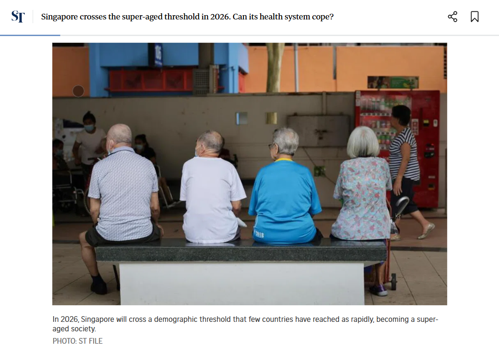
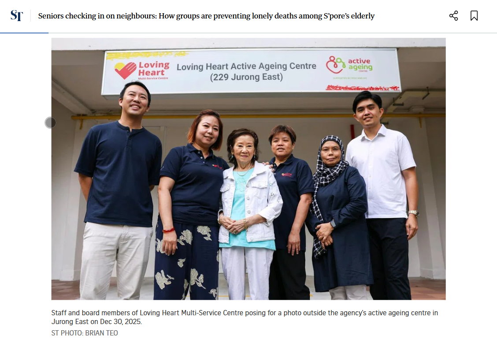

Singapore is one of the fastest-ageing countries in the world. Many elderly people live alone, some have family members who are too busy to provide regular support, while others have no famiy at all. This often leads to ongoing worry about their wellbeing when staying alone. A missed phone call or a day without contact can cause unnecessary panic, or worse, go entirely unnoticed.

Link to Straits Times Article
Link to Straits Times ArticleThis Elderly Checkin System is a full-stack web application designed to give seniors independence while giving families peace of mind. Seniors check in once daily through a simple, large button interface designed specifically for older users. If a check-in is missed, the system automatically a;erts the family, no manual monitoring required.
Seniors log in every morning and complete a simple check-in, indicating how they feel, good, okay, or unwell. If a check-in is missed pass a configurable grace period, family members receive an automatic email alert. Family members have their own dashboard to view the check-in history, manage emergency contacts, and monitoring their loved one's wellness streak. Administrators can oversee all registered seniors on the platform.
As someone re-entering the tech industry after a career break, I wanted to build something that can solve a real problem close to home. Singapore's eldercare challenge is very personal, many of us have parents or grandparents living alone, we ourselve will eventually grow old one day. This project gave me an opportunity to apply full-stack development skills in a meaningful context, while demonstrating my ability to think about the real users, not just code.